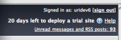
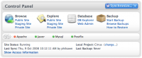
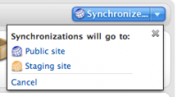
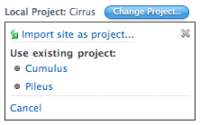
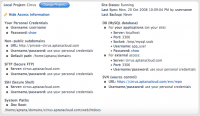
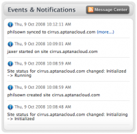
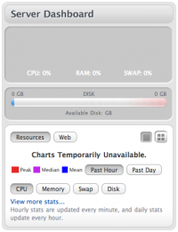

Contents |
What

The overview screen shows you basic information and the status of the currently selected site.
Trialing an Aptana Cloud
  Cloud Trial Time Remaining
Cloud Trial Time Remaining
{kind=link}
You may try the Aptana Cloud service for up to 30 days before deciding to sign up as a customer. You can deploy one trial site for the entire period or a series of sites, but only one at any given time. Once you deploy the first trial site the 30 day clock starts and it doesn't stop or pause even if you delete the trial site; that is, if you deploy a site on, say, January 1st, your trial ends on January 31st whether you deleted the trial site on January 3rd and did not deploy any other trial sites for the remainder of the month.
The My Aptana page will show the remaining time in your trial as soon as it begins next to the Help link at the top right of the page.
The My Aptana page will show the remaining time in your trial as soon as it begins next to the Help link at the top right of the page.
How
How Do I Restore From a Cloud Backup?
Control Panel
 Control Panel
{kind=link}
Synchronization
 Sync with open dropdown menu
{kind=link}
The "synchronize" button at the top of the screen launches the Smart Sync window. Use the Smart Sync window to synchronize files between your local project files and the Aptana Cloud.
Quick Links
- Browse files on the public site, staging site, Private site
- Explore files on the public site, staging site, and private site
- Database open Database Explorer and Web Admin
- Backup start backup, browse, backups, how to restore
Change the Local Project connected with your Cloud
 Associate Cloud with Project
{kind=link}
The current local project (if any) associated with your cloud site will be listed.
You may change the local project associated with a specific cloud site by clicking the change project button. A box will open listing other currently open projects. If the project you wish to associate is not listed, make sure it is open in the project view. Click the name of the project you wish to associate. A pop-up window will ask you to confirm your change. Click ok to make the change or cancel.
After you make this change, you should synchronize the site now to push the new set of files up.
You can also import your cloud site into a new project from here. Clicking import site as project will launch the Import Wizard.
You may change the local project associated with a specific cloud site by clicking the change project button. A box will open listing other currently open projects. If the project you wish to associate is not listed, make sure it is open in the project view. Click the name of the project you wish to associate. A pop-up window will ask you to confirm your change. Click ok to make the change or cancel.
After you make this change, you should synchronize the site now to push the new set of files up.
You can also import your cloud site into a new project from here. Clicking import site as project will launch the Import Wizard.
Access Information
 Access Information
{kind=link}
Clicking the show access information link will open an area of the page that will show you all the ways you can access your cloud servers and services.
Administering Your Database
To administer your MySQL server, click the Web admin links. Clicking web admin will launch PHPMyAdmin in a new window. To log in here, use the username and password combination you selected in step 3 of Cloud Deployment (see Using the Database Explorer with the Aptana Cloud)</div>
Site Status
Icons show quick status of Apache, Jaxer, Mysql, Postfix. Your site status will be listed. The name of your local project will be listed here. The time of your last sync and last backup (if any) will be listed here.
Events & Notifications
 Cloud Events & Notifications
{kind=link}
The five most recent events & notifications are listed next from your message center RSS feed. A button to the right lets you access the Message Center  . The Message Center is also available from the RSS icon in the lower right corner of the Aptana IDE window
. The Message Center is also available from the RSS icon in the lower right corner of the Aptana IDE window  .
.
Server Dashboard
 Cloud Graphs
{kind=link}
Resource graphs show updated usage including:
- CPU
- swap and memory
And web statistics, including:
- bytes transferred
- successful hits
- successful page views and pages with referrers
Getting to My Cloud - Overview
- choose Open Aptana Home from the Help menu
- click the My Cloud tab
- the overview tab in the sub navigation will be selected
- you can optionally select another cloud site from the list on the left